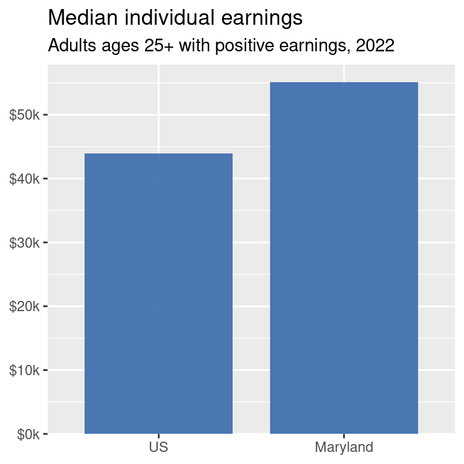
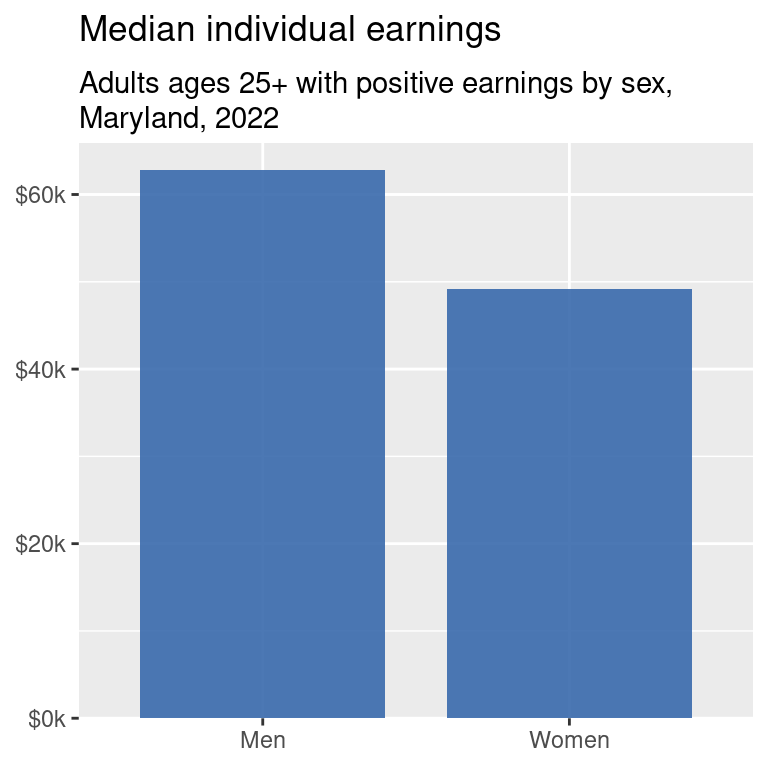
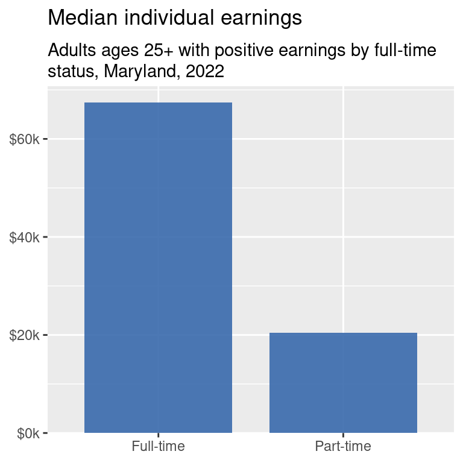
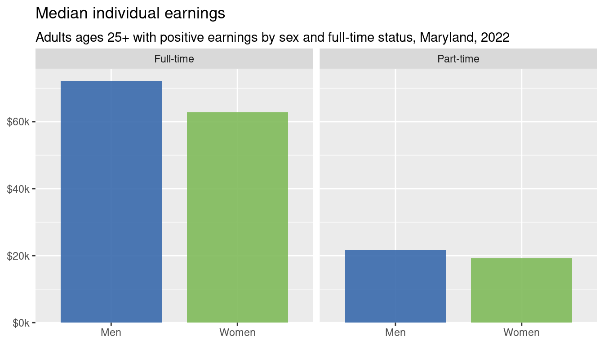
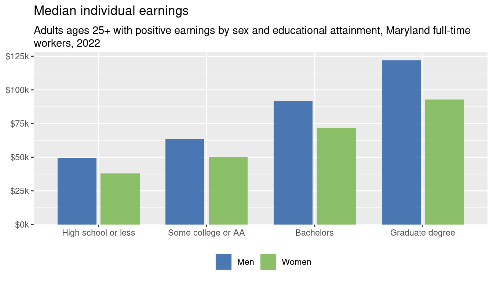

1. Do you need a chart?
Walkthrough: what goes into a chart?
Making a chart might seem like a pretty straightforward task: you have data, you make a chart. But there are a lot of things to consider, and they depend on all sorts of factors, like the type of data, your audience, your purpose in visualizing it, the context, and on and on.
First question you should ask yourself:
Do you even need a chart?
That chart is fine, but it takes up a lot of space to only show 2 numbers. Oftentimes projects that require visualization have caps on length, such as grant applications or print reports where every additional page adds to the budget. In a lot of contexts, you’re probably better off with written text, either just a written sentence if it’s for a report or article, or bullet points or a pull-out quote. You’ll often see documents with something formatted like this:
Maryland adults ages 25 and up had median earnings of about $55,000 in 2022, more than $11,000 higher than the US average.
Maybe you have a lot of data and your audience wants to see every number exactly, or you just have 2 or 3 numbers but you’re short on space: a nicely formatted table might be better.
| Location | Median earnings |
|---|---|
| US | $43,961 |
| Maryland | $55,108 |
But if you have somewhere in between a couple data points and too many data points, then making a chart could work. So we’re gonna make a lot of charts.
In fact, this data gets at a super pet peeve of mine that can be illustrated well with data visualization.
The wage gaps
So we already established that Maryland has higher earnings, on average, than the US. Usually when people say “the wage gap,” they’re talking about women’s pay versus men’s pay, e.g. women make x cents on the dollar.1

Again, super important point but doesn’t quite warrant a chart. You’d get a better sense of the comparison that’s more memorable by just writing:
Working women in Maryland make about 78 cents on the male dollar.
(And then in the footnotes include the specifications of “among adults ages 25 and up with positive earnings in 2022.”)
One explanation often given for women’s pay being less is that women are more likely to work part-time, and part-time jobs pay much less on average.

So now we’ve established that there are differences in median earnings between women and men, and between full-time and part-time workers, and that Maryland has a higher median earning than the US as a whole. One of the frameworks we’ll use for understanding out data is data feminism,2 which looks at how data can be used to highlight intersections between the patterns we’ve established.
A good place to start, then, is earnings by sex and full-time status. Let’s make a table:
| Status | Men | Women |
|---|---|---|
| Full-time | $72,222 | $62,802 |
| Part-time | $21,579 | $19,200 |
Just kidding, that’s hard to get a pattern from, and we now have enough comparisons to warrant a chart:

The gaps are actually smaller within groups (full-time men vs full-time women or part-time men vs part-time women) than across (all men vs all women). So the tendency of women to work part time explains some of the wage gap, but not all of it. If the difference were only about work status, we would expect to see no within-group gaps here.3
We’ve also looked at education, so we might as well look at both education and sex.

Even among only full-time workers, there are gaps at every education level so severe that men at any given education level are paid roughly as much as women at the next level above them. For example, by getting a graduate degree and working full time, women only earn about $1,100 more than men with only a bachelor’s. That’s a pattern that would be hard to glean from just reading a table of numbers or from only seeing the within-groups ratios.
So far we’ve worked through identifying several important patterns using just a very simple type of chart that people commonly know how to read—the charts are almost identical, just different slices of the data. But other chart types might help with highlighting different things, such as those gaps.
Chart types
Bar charts are excellent at showing the size of a value, and good at showing how those absolute values compare. But you might want to change chart types to focus more on the differences.
Footnotes
All of this analysis is based on Census data, which only records gender as male and female, so that’s what we’ve got to work with.↩︎
Catherine D’Ignazio, “What Would Feminist Data Visualization Look Like?” December 2015, https://civic.mit.edu/feminist-data-visualization.html; Catherine D’Ignazio and Lauren F. Klein, Data Feminism, \(<\)Strong\(>\) Ideas Series (Cambridge, Massachusetts London, England: The MIT Press, 2020), https://data-feminism.mitpress.mit.edu/.↩︎
We’ll talk about annotations in a couple weeks, and we’ll return to these charts to practice. Think about what you might want to annotate on these multidimensional charts.↩︎